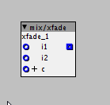

yes, i did save as....also i think when you have more than one object editor open, the slashobject gets confused...
re-initing solved the issue anyhow,...
How to code Axoloti objects
philoop
#62
philoop
#63
as i said changing min max values isnt reflected in sha....
btw. i use ur sel objects with display extensivly 
thetechnobear
#64
so your doing save as, and saving your modified patch/object into a new location within your own 'local library' e.g. home/objects
my suspicions is the uuid and sha are not being updated correctly.
one thing you could try,
once you have done the save as... hit reload objects... then open up your object in the object editor and hit save again... ( this may correct the uuid... not so sure about the sha, id need to look at that again)
Ive some ideas about how this 'workflow' can be improved that I'm running past Johannes.
philoop
#65
ha! if u change something else in the code (not min/max) the object will have a different sha. 

i changed outlet name to o1-16 ....
thetechnobear
#67
some good news, the sha and uuid issues, will become a thing of the past soon (assuming my final testing goes ok  )
)
paul
#68
hi,
I'm working on euxoloti object and got stocked at the adc & spi routine. the object should output each pot and cv input (2x MCP3208) value at a separate output. It's working but the axoloti cpu usage is steadily at 100%. If single objects (spi, script2) do the job, the cpu usage will be only around 2%. (watch pic1 VS pic2)
So something is horrible wrong and i don't know what's the reason(s).
adc.axo (6.1 KB)

{kind=link}
{kind=link}
johannes
#70
script2 runs your code in a separate thread, while your "CVs and POTs" runs your code at k-rate (in the DSP loop). Dissect script2 and you will see. Handling protocols should generally be done in a separate thread, unless all functions called will complete without waiting.
MAX11300 for CV-IN and CV-OUT
thetechnobear
#71
@rekado - how did you get on with interfacing with Faust? did manage to get to a state where it could be used in a generic way? how was the performance?
rekado
#72
I worked on the C sources (generated from Faust sources) for a phaser that's part of Guitarix. I had to manually replace or disable a couple of things. Without Faust compiler support there is no easy way to use saturation integer arithmetic, so I kept the floating point maths as is.
One problem I encountered is the use of libm functions such as exp.
The phaser works fine now, but I had to do some manual plumbing to expose parameters and convert their ranges. It seems difficult to do this in a generic fashion just by running a post-processing script over the generated C sources. I looked at the latest development version of Faust, which would allow me to write a dedicated compiler backend for the Axoloti, but I didn't yet find the time to pursue this any further.
janvantomme
#73
I'm currently working on an object to work with the LKM1638 board and it would be handy if I could reuse some pieces of code. Can I add small functions like the code below to <code.declaration> or <code.init> in the XML?
void myFunction( uint8_t myVariable ) {
// do some stuff here...
}
philoop
#75
the xfader is unipolar , what do i have to change in the code to make it bipolar?

Please can someone help?
philoop
#76
ok ...it was easy to change the code...
i am trying to make an inverted mixer.it works well but the mixer is zero is at -1..
i tried changing the code but couldnt find a solution...
invmix.axp (2.0 KB)
please help!!
How about open a new rubrik for coding?
Sputnki
#79
That's a shift operation. You know you can express integer number in bytes, for example 42 in binary is 0000000101010 (put any number of zeros in front of it, it does not change.
If you write(42>>1) what you're doing is shifting all the bits to the right by 1 position.
Therefore 101010 becomes 10101, which is 21.
In case you do(42>>2) you're going from 101010 to 1010 (the two bits are completely discarded), which is 10
Same thing for << (left shift) but the opposite: `42<<1` becomes 84.
101010 -> 1010100
You can see it like a multiplication of the number by 2^n.
Sputnki
#81
Write it here https://www.wolframalpha.com/ and see what comes out.
What about using - for subtractions, instead of operators you know nothing about?